88fits · Level Editor · pass 66
The Art Guide
How to make a creature, a hero or an item look the way you want, from the Level Editor and your own AI server: every generation method, what it needs, what it makes, how long it takes, what to check afterwards, where the stats live, and where the result shows up in the game.
The loop
Everything below happens in the same page you already use for the waves: tools\level_editor.cmd, then the Enemies, Heroes, Items and Jobs tabs. One asset follows one loop:
- Create or open. On the Enemies, Heroes or Items tab press Edit on a card, or + New from template and pick the asset the new one starts as a copy of. A new one gets its folder, a placeholder picture and an import at once, so it exists in the game from the first second.
- Set the stats. The form on the right: identity, body, brain and attacks, spawning, drops, tints, sounds. Everything has the template's number as its default. Save asset (or Ctrl+S) writes only the lines you changed and imports the file.
- Queue the art. In the Looks section press + Generate art…, pick a method from the cards, fill its words, add references, set how many looks, and Queue. One job per look goes to the Jobs tab and runs on the AI server, one at a time.
- Review. When a job lands, the look appears in the grid with a NEW chip. Hover a card to play it; click it for the big player: every animation, every facing, zoom up to 4×, the frame on the sand at the game's scale.
- Decide. Make default is the look the game plays. Approve clears the NEW mark. Shelve hides a look you want to keep but not see. Remove moves its files to the backups. Re-roll… runs the job again on a new seed, keeping what was good.
- Put it in the game. An enemy appears wherever a wave names it (the Timeline). A hero or an item is available, hidden or locked by a quest, set on its form. Test in game opens the arena with that asset at once.
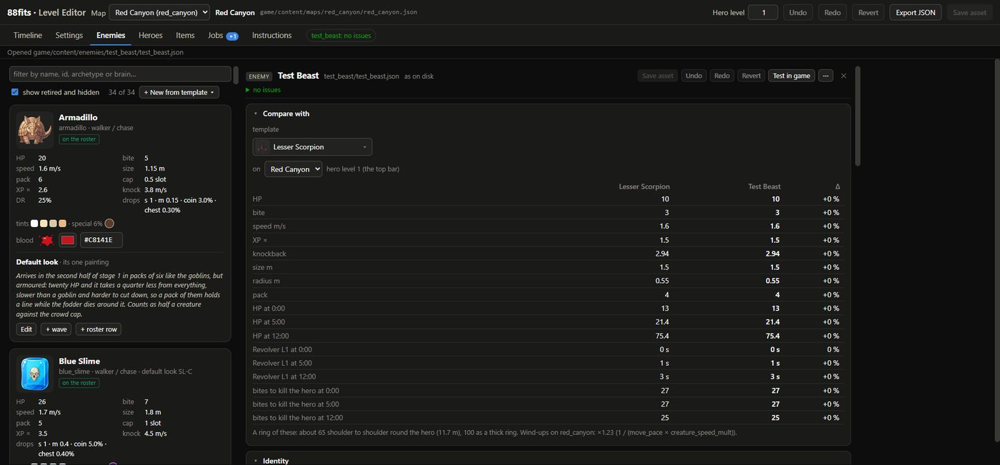
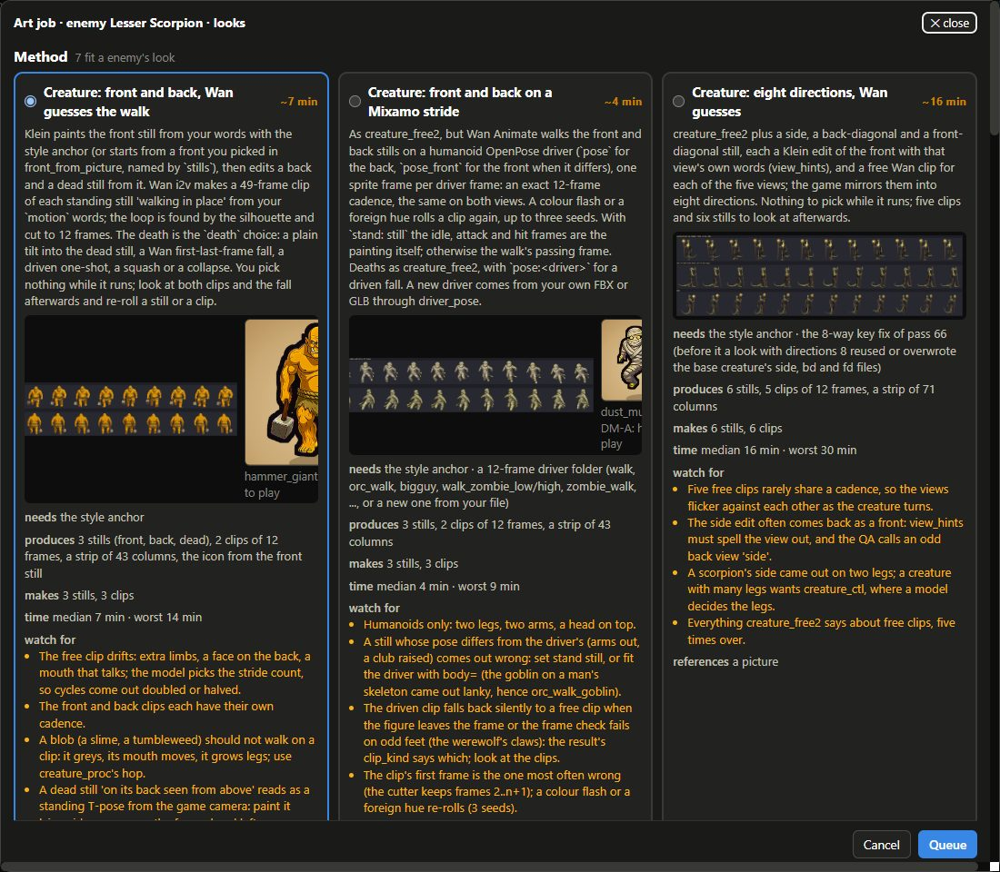
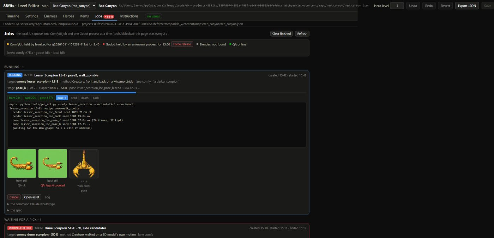
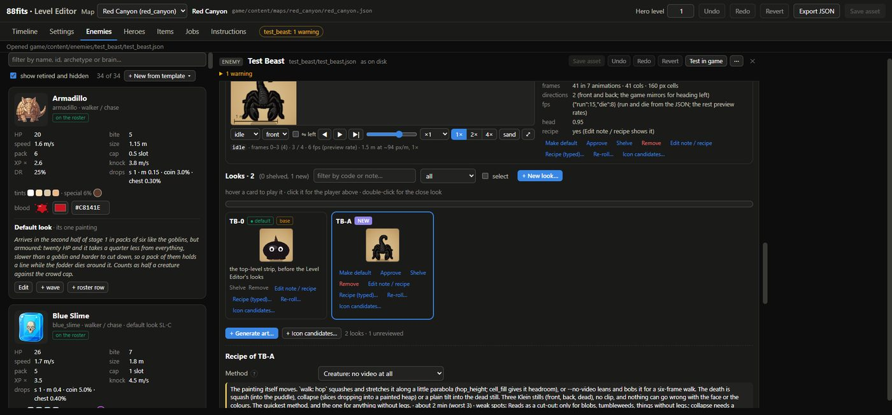
Before you pick a method
There are three families of art and the editor only offers the methods that fit the asset you have open:
There is no strength number anywhere in this pipeline. A reference picture steers by which pictures go in, in what order, and the words sent with them. The form offers the roles that work: identity (what it looks like), style (the house anchor, always first), pose and anatomy (a clay render of a model), and a follow level, loosely, closely, copy exactly, which picks the wording that worked in earlier passes. A 2D picture reaches only the front still of a creature (or the side of a model-walked one); every other view is an edit of that painting. Motion is never steered by a picture: the still plus words, or a driver.
The vision check only counts subjects, spots a scene background and names the view. It does not count fingers, ears or legs and it cannot judge likeness. Paint several seeds, look at the sheet, pick one. Every method that produces candidates stops and waits for your pick in the Jobs tab.
A Klein still takes about 20 seconds. A Flux.2 dev render (the "dev" switch, a better painter) takes 4 to 5 minutes and restarts the server each time. A Wan Animate clip on a driver is about a minute; a free Wan clip two and a half; a fall two. The estimate on each job card is a median: a loaded server can take ten times longer on one clip.
Hero art
A hero is the biggest piece: 13 stills and 5 clips. The first run of a hero is five views on a stride; every later look reuses those paintings and only walks again (fitted). The badge and the title cut-out belong to the hero, not to a look.
Hero: five views on a Mixamo stride
When. A brand-new hero, or a hero whose paintings should change (a new outfit, a new face). The default method on the Heroes tab.
What happens. Klein paints the front still from your words with the style anchor as its reference, then edits that one painting into the back, the side, the two diagonals, a cheer, five hurt faces, a dead pose and a portrait. Wan Animate then walks each of the five view stills on an OpenPose driver (the run driver unless the recipe names another per view), one sprite frame per driver frame, 24 a view, so every view shares one cadence. The hit is four frames round the hurt still; the death the front flinch tipping into the dead still. The strip is packed and, for the hero's base look, the round badge painted.
You pick nothing while it runs. Afterwards look at every still and every clip in the look grid. Re-roll one still (its key and a new seed) or one clip (its folder moves aside, anim_seed goes up by one) from the job card's Re-roll….
- art_prompt
- Who he is: body, clothes, colours, what he holds, "standing straight, arms relaxed". The most important field.
- pose_hint · back_hint · side_hint
- Extra words for the stills; the back hint says what the back of the head and the outfit show ("no face at all").
- hurt_hint · portrait_prompt
- The wince, and the badge's close-up.
- pose_drivers.back / bd / side / fd / front
- The driver per view. Give the back views
run_spreadwhen hands get painted through the torso. - pose_motion · anim_hint · anim_seed
- The words Wan Animate gets, and the seed that re-rolls every clip.
- screen · key_*
- Blue screen for heroes; the key settings for shiny or pale materials (Solenne's latex needed
key_sat0.85).
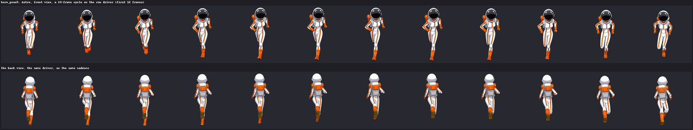
A face painted on a back cycle (look at the back clip). Hands through the torso on the back views (the run_spread or run_occ driver). A wide figure that touches the clip's edge falls back silently to a free clip and the run drops to 14 fps: the job's clip_kind says which views fell back; shrink the driver or set clip_fill 0.56. A hero whose body is not a man's (a big head on a slim body) gets a different head size per view: that is what fitted drivers are for. anim_negative does nothing on Wan Animate; the seed and the driver are the levers.
Hero: another walk, fitted to this painting
When. The paintings are right and the walk is not: you want the same hero on another stride (a catwalk, a heavier walk, your own Mixamo clip), or the head and hands come out the wrong size per view.
What happens. Nothing is painted again. The pre-steps make a fitted copy of the driver: pose_fit scales the stick figure to the painted body and pins the face on the painted head, pose_spread pushes the back views' wrists out past the torso, pose_scale shrinks the back views so wide arms stay inside the clip, pose_occlude hides the hand that swings in front of the chest. Then the five clips roll on it. You choose the source driver and the steps, then look at the five clips.
- fit_source
- The driver to fit:
run,catwalk,walk_sun, or one you made with driver_pose. - fit_template
- The measurements of the painted body (
tools/pose_templates/<id>.json). Solenne has one; a new hero needs his own before pose_fit changes anything. Ask Claude for it once per hero. - fit_spread · fit_scale · fit_scale_views · fit_occlude
- The three repairs for the back views.
- still_keys
- Swap a single painting for a composed one (Solenne's side still with the sun disc turned to the viewer).
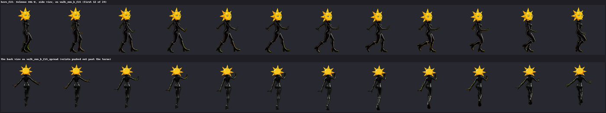
A walk with the toes turned out reads its forward off the feet up to 20 degrees wrong: the driver wants fwd=body. Klein will not turn some heads (the sun disc came out edge-on six times out of six): compose the still and name it in still_keys.
Hero: the round badge
When. The round picture on the hero's plates, the hero sheet and the results screen.
What happens. N close-up portraits edited from the hero's front still with the portrait words, each shown inside the round frame with the head width and top padding of the hero's badge block; a review sheet in the Jobs tab. You pick one: it becomes the hero's icon and is remembered in his JSON so a later base run keeps it.
- portrait_prompt
- "head and shoulders, looking at the viewer with a small knowing smile".
- badge.head_width · badge.top_pad
- How much of the circle the head fills, and the gap above it. A bust that runs off the bottom of the frame is what the badge wants.
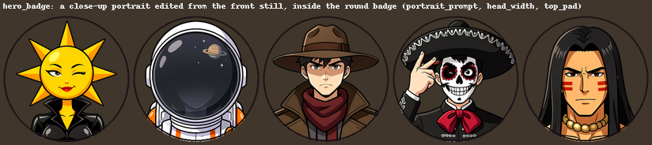
Hero: the title cut-out
When. The big painted figure on the title screen's carousel.
What happens. A full-body splash from the front still and a pose prompt, with an optional object reference copied exactly (a render of the thing he holds and its words), N seeds, keyed and fitted to the title's box; a review sheet. The pick writes the title picture and a Godot import follows, so the title shows it on the next launch.
- title_pose
- The whole-body gesture: "standing with his feet apart, one hand tipping the brim of his hat".
- title_holds · title_camera
- The one thing he holds, and the shot ("three-quarter, from a little below").
- title_extra_ref.file · .words
- A render of the held object (from ref_render) and what it is.
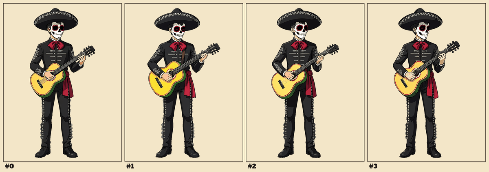
Extra fingers (the check passes them). A named weapon becomes a real one ("finger-guns" yields pistols): describe the gesture, not the thing. The word "hit" paints impact rings.
Creature art
Creatures are cheaper than heroes. The game plays two directions for almost every creature (front and back, mirrored for left and right), so the default methods paint two views. Eight-direction creatures exist but are harder to keep consistent; the one that works well walks a real 3D model.
| Method | Walks by | Views | Time | Best for |
|---|---|---|---|---|
| no video at all | the painting squashes and hops | 2 | 1.5 min | blobs, slimes, tumbleweeds, anything without legs |
| front and back on a stride | a Mixamo driver | 2 | 4 min | humanoids: goblins, skeletons, mummies, werewolves |
| front and back, Wan guesses | a free video clip | 2 | 7 min | animals and odd shapes where no driver fits |
| eight directions, Wan guesses | five free clips | 5 → 8 | 16 min | a creature that must turn smoothly and has no model |
| a 3D model's own motion | depth videos of your model | 5 → 8 or 2 | 12 min + picks | many legs, real anatomy: scorpions, beetles, ants |
| a front from a picture | (a pre-step) | 1 | 1.5 min | starting from a picture you have |
| recolour a look | (no model) | same | seconds | a red version of a green one |
Creature: no video at all
When. Anything without legs. The quickest method, and nothing can go wrong with the face or the colours.
What happens. Three Klein stills (front, back, dead) and no clip. The painting itself moves: walk: hop squashes and stretches it along a little parabola, or the "no video" switch leans and bobs it for a six-frame walk. The death is a squash into the puddle, a collapse (slices dropping into a painted heap) or a plain tilt into the dead still.
- art_prompt
- The creature, front view, standing.
- walk · hop_height · cell_fill
- Hop or lean; how high; how much headroom the cell leaves for the hop (raise the creature's
sizestat to keep its on-screen size). - death · dead_hint
- squash, collapse or tilt; what the dead picture shows.
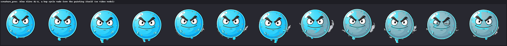
It reads as a cut-out on anything with legs. A collapse needs a dead hint that describes a heap: a painted mid-collapse once came out as a two-headed skeleton.
Creature: front and back on a Mixamo stride
When. A humanoid: two legs, two arms, a head on top. The cadence is exact and the same on both views.
What happens. Klein paints the front (from your words, or from a front you picked from a picture), then the back and the dead still. Wan Animate walks the front and back stills on a humanoid OpenPose driver (pose for the back, pose_front for the front when it differs), one sprite frame per driver frame: 12 frames. A colour flash or a foreign hue rolls a clip again, up to three seeds. With stand: still the idle, attack and hit frames are the painting itself; otherwise the walk's passing frame. Deaths as the free method, plus a driven fall (pose:<driver>).
- pose · pose_front
- The driver:
walk,orc_walk,bigguy,walk_zombie_low(back) withwalk_zombie_high(front) for level arms, or one from your own file. - stand
stillwhen the painting's pose differs from the walk (arms out, a club raised).- gait · anim_seed
- The words for the walk, and the seed that re-rolls it.
- death · dead_hint
- see Deaths.
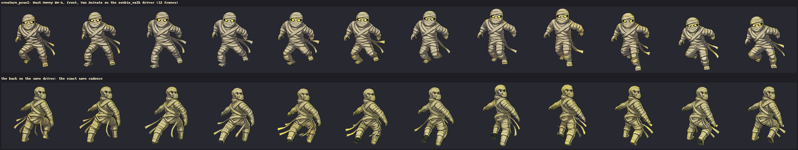
A still whose pose differs from the driver's comes out wrong: set stand: still, or fit the driver to the proportions (body=, the goblin on a man's skeleton came out lanky). The driven clip falls back silently to a free clip when the figure leaves the frame or the feet are odd (the werewolf's claws): the job's clip_kind says which, so look at both clips. A back cycle came back with a face: back_hint. A caped or shielded figure fails the falling driver and tips over instead.
Creature: front and back, Wan guesses the walk
When. An animal or an odd shape that no driver fits and no model exists for: a toad, a crab, a lizard, a giant.
What happens. The three stills as above. Wan i2v makes a 49-frame clip of each standing still "walking in place" from your motion words; the loop is found by the silhouette and cut to 12 frames. The death is the death choice.
- motion
- "scuttling in place on its eight legs, pincers held forward, the tail swaying". The one field the walk comes from.
- clip_fill
- How much of the video frame the still fills (lower for wide creatures).
- anim_negative · anim_seed
- What the clip must not grow; the seed.
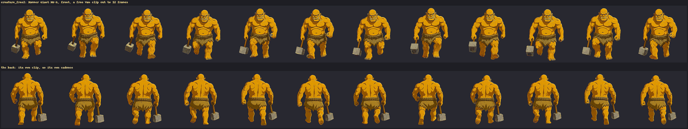
The free clip drifts: extra limbs, a face on the back, a mouth that talks; the model picks the stride count, so cycles come out doubled or halved, and the front and back have their own cadence. A blob should not walk on a clip (it greys, grows legs): use no video. A dead still "on its back seen from above" reads as a standing T-pose from the game camera: paint it lying sideways, head left. "on the sand" paints a ground patch: say no ground. A green or pale creature on the green screen gets keyed or rimmed: screen blue.
Creature: eight directions, Wan guesses
When. A creature that must turn smoothly (a caster that circles you) and has no 3D model.
What happens. The front-and-back method plus a side, a back-diagonal and a front-diagonal still, each a Klein edit of the front with that view's own words (view_hints), and a free clip for each of the five views; the game mirrors them into eight directions.
- directions
- 8.
- view_hints.side / bd / fd
- Spell each view out ("low on its eight legs, the tail curled over its back, pincers ahead"): the side edit often comes back as a front without them.
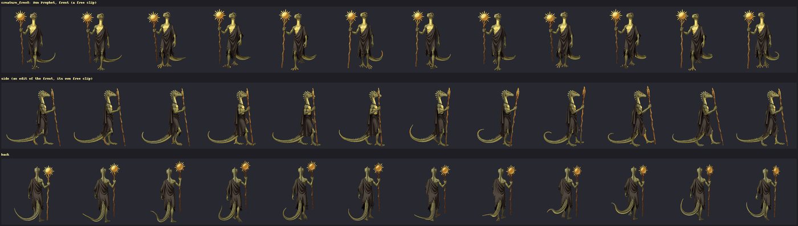
Five free clips rarely share a cadence, so the views flicker against each other as the creature turns. A scorpion's side came out on two legs; a creature with many legs wants a model's own motion. Everything the free method says, five times over.
Creature: walked on a 3D model's own motion
When. Real anatomy with many legs: the scorpions, the Bull Beetle, the Fire Ant. You need a rigged model with its own walk (and ideally its death), turned into depth drivers first (driver_depth).
What happens. Stage 1 paints the side view from the model's clay render, with the style anchor first and an optional look picture, as three candidates (Klein in 20 s each, or Flux.2 dev with the dev switch: 4 to 5 minutes each) and stops for your pick in the Jobs tab. Stage 2 paints the other four views from the side painting and each view's own clay, with how each faces spelled out (words), then walks every view along its depth video. A wrong view is painted again as candidates and picked. The death walks the front painting along the model's death clip (death_keep picks its 8 frames, re-pickable without a render) or, without one, paints a dead still and falls into it. The strip packs the five views into eight directions, or two with directions: 2 (the ants).
- drivers · death_drivers
- The depth driver folders (
scorpion_walk,beetle_walk_amp, or yours). - prompt · noun · blockout · detail · anatomy · keep
- What to paint, what the clay is, the parts to insist on ("exactly eight legs, one tail"), and the colour to keep ("jet-black, never brown").
- words.front / fd / bd / back
- How each view faces: "walking straight towards the viewer, the pincers nearest, the tail curling up at the top".
- look_ref
- A picture of the colours and markings (your 2D reference, or the model's own textured render).
- remap_hues · walk_seeds · side_seeds · dev
- Colour repair per view, another seed for one view's walk, how many side candidates, the better painter.
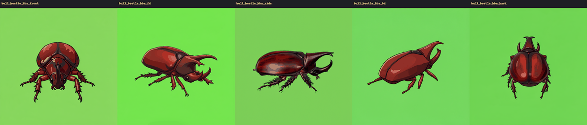
Wan keeps the painting's scale, not the video's, so the five paintings should be the same size. A view drifts to another colour (purple, peach): remap_hues keeps the value, so a wrong colour must be repainted; name the colour in keep. A floating sting or horn: another walk seed for that view. A "plain" or "simple" look on Flux.2 dev returns the clay itself: edit a richer look instead. The side is painted first for a reason: a front painted from the blockout came out top-down with the head at the far end.
A front painting from a picture (a pre-step)
When. You have a picture of the creature (a drawing, a photo, a render) and want the front still to be that.
What happens. Klein redraws your picture as the house style's front still: the picture flattened on white goes in as a reference after the style anchor (or alone, with "no style anchor"), with the "redraw this exact creature" wording, N seeds, a review sheet. You pick one; it becomes the stills name any creature method paints the back and the dead from. The picture reaches the front only.
- picture · prompt · keep
- The file, what it is, what must survive ("two small yellow eyes, the ragged green trousers").
- seeds · screen · no_style_ref
- How many, blue for green subjects, the picture as the only reference.
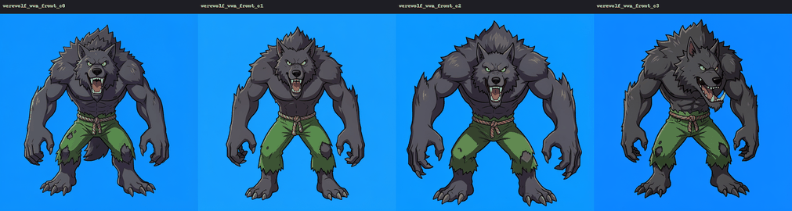
Identity holds only as well as Klein edits; the back and the dead are guesses from the front. A character copied on the green screen lost its talons on the back (boots instead): name the feet in words. A green subject on the green screen is keyed away: screen blue.
Recolour an existing look
When. The same animation with a new skin: the Red Goblin from the goblin, a dark-blue skeleton from the white one.
What happens. The hues inside the ranges you give move on every frame of a finished strip and on its icon; "tint" mode makes a pale material dark and saturated instead. The server copies the source look's frame counts into the new entry; a preview sheet shows the result first.
- recolour.from
- The source look's code.
- recolour.ranges · to · sat
- Which hues move (degrees on the colour wheel, 55 to 135 is the goblin green) and where to (357 is red).
- recolour.mode · set_sat · value
- hue or tint; tint's darkness.
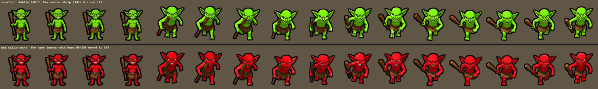
Only hue and value move; the lines and the shading stay. A range that touches the eyes or the weapon recolours them too: look at the preview.
Deaths
Every creature method takes a death choice. The creature has one death set, drawn from the front.
| Choice | What it does | Extra time | Use it when |
|---|---|---|---|
| Tilt over (free) | The standing painting leans and tips into the painted dead still: 5 frames, no model. | 0 | anything, as a safe default |
Painted dead still + a Wan fall (clip) | Wan first-last-frame from the standing painting to the dead still, 33 frames cut to 8. | 2 min | a real fall for a walking creature |
A driven fall (pose:<driver>) | Wan Animate on a one-shot driver (Mixamo's Falling Back Death, or a fitted copy). | 1 min | humanoids; fails on capes and shields and tips over instead |
| Squash | The painting squashes into the puddle in 6 frames. | 0 | blobs |
| Collapse | The painting is cut into slices that drop into a painted heap (the dead hint must describe the heap). | 0 | skeletons, piles |
The model's own death (death_drivers) | The front painting walked along the model's death clip; death_keep picks 8 of 25 frames. | 1.5 min | a 3D model with a death clip |
From the game's camera a creature "lying on its back seen from above" reads as a standing T-pose. Paint the dead still lying sideways across the frame, head left. The tilt and the fall both end on that picture.
Item icons
An item's visual part is its icon: 256 pixels, in the shop-card style, cut off the screen colour with a thin outline. The 3D model a weapon carries in play stays Claude's job. On the Items tab the + Icon candidates… button sits under the icon preview; the quick one-roll option is in the same form.
Item icon (one roll)
One Klein render of the item's art_prompt, no reference at all, three tries when the vision check objects. The old icon is backed up first. Good enough for a potion, a boot, a clover. For a shape that matters, paint candidates with a render of the real thing instead.
- art_prompt · screen
- "a purple horseshoe magnet with two small purple gems pulled towards it"; blue for anything green.
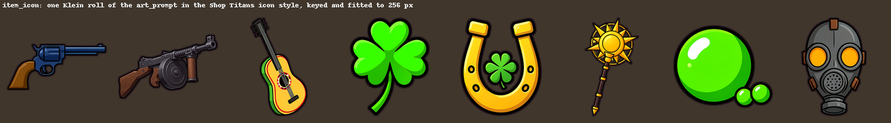
Icon candidates (pick by eye)
N seeds of the icon prompt, with an optional reference laid on the screen colour and the "copy this exact object" wording (a Blender render of the real weapon from ref_render, or a picture); the dev switch paints on Flux.2 dev. A review sheet; you pick one and it is installed as the icon. The same job paints a creature's or a hero's icon file when you start it from their form.
- subject · ref · screen · style · seeds · dev
- What to paint, the render to copy, blue for green subjects, another style line, how many, the better painter.
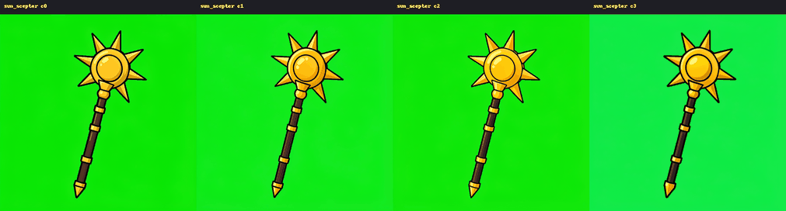
It counts parts wrong (an extra barrel, six strings on a four-string): pick by eye. Grey and silver pick up the screen's tint and the keyer cuts them. A glow in the prompt keys into a halo; gold reads tan unless deep and a little self-lit. Flux bends dice and gun barrels: render the true shape and copy it.
Your own 3D files
Drop an FBX or GLB in the job form's 3D row and the editor probes it with Blender in a few seconds, then offers what the file allows. Per reference you tick what it is for: the icon (a render the icon job copies), the look (clay and textured renders the creature is painted from), the animation (drivers that teach the walk).
A Mixamo-style FBX Binary, 30 fps, "In Place" ticked, keyframe reduction none, with skin; or a GLB that carries its animation with Mixamo bone names. A model without an animation clip can still be the icon's reference and the look reference, but cannot drive a walk. Humanoids with other bone names get a bone-map form (the probe guesses 21 rows for you to check). A creature that is not a humanoid (a beetle) can only make depth drivers, from its own clips.
What a 3D file can do
Reads the file (FBX, GLB, OBJ, DAE, .blend, or a zip the way Sketchfab packs them) and writes: the armature's bones, the clips with their length, the meshes and whether they carry textures, the size, a rig guess, where the model faces, and which uses it allows, in a sentence. Plus a thumbnail sheet of the five game views and the icon's angle. Runs by itself after an upload.
Check the thumbnails: a humanoid's forward is read off its feet and a toe-out walk reads up to 20 degrees off.
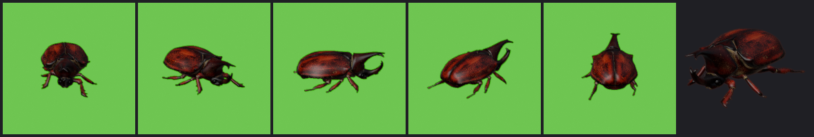
Icon and look renders of a 3D model
icon: a front-left three-quarter view from a little above, textured, on a transparent film: the reference the icon candidates copy exactly. views: the five game views as warm clay and in the model's own colours, framed exactly like the depth drivers: the look reference the model-walked creature names, or a picture for the front-from-picture step. Posed on the clip and moment you choose.
- mode · forward · action · at · icon_yaw · icon_pitch · albedo
- icon or views; which way the model faces; the clip and the second to pose on; the icon's angle; a texture file when the model lost its paths.
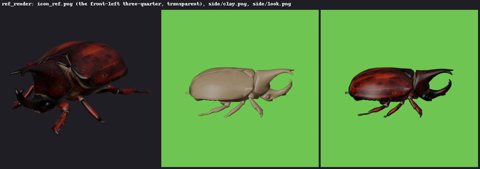
New OpenPose driver from an FBX or GLB
Resamples one stride of a humanoid clip to N frames for the five game views, seen from the game's camera, and draws them as stick figures with hands. 24 frames for a hero run, 12 for a creature walk; loop off for a one-shot such as a death; start and end in seconds slice one stride out of a longer clip. The result is a driver folder every hero and humanoid-creature method can name.
- src · name · frames · loop · start · end · pitch · arms · body · fwd · rig · rigmap
- The file, the folder name, 24 or 12, the slice, the camera's tilt,
zombieorhold_rarms, proportions to fit (body=),fwd=bodyfor toe-out walks, the rig kind or your bone map.
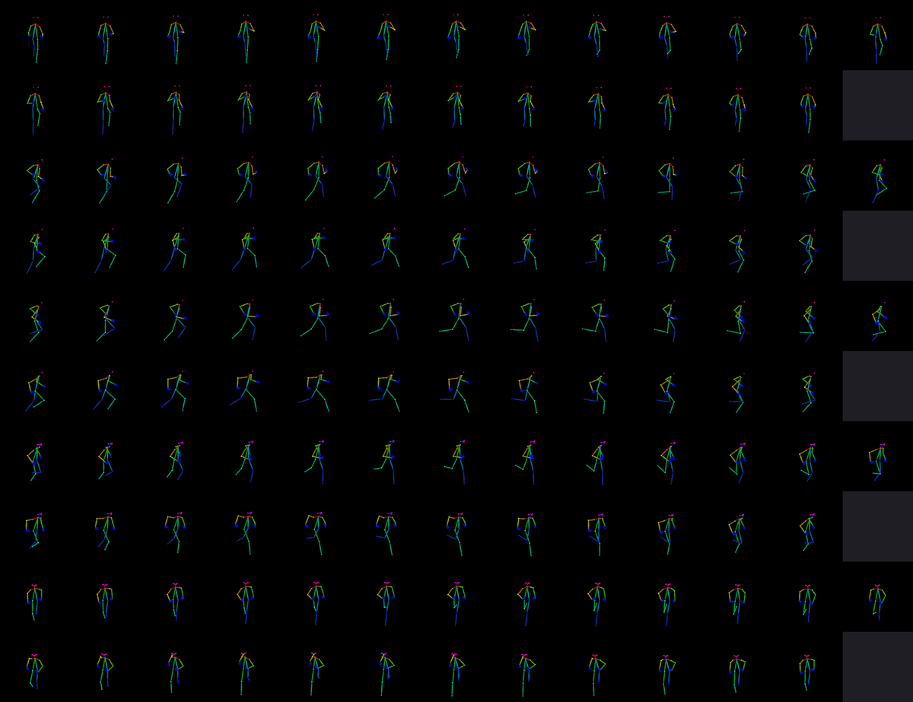
A clip with several strides must be sliced to one. A man's skeleton makes a goblin lanky: body= fits the proportions. Wide arms leave the clip frame: scale the back views 0.85.
Depth drivers from a rigged model's own clip
Plays the clip you choose on the model (a beetle, a scorpion, a humanoid), takes the travel out, optionally swings the leg bones wider (amp, because a real creature's step is too small to read at sprite size), and writes for each of the five game views a depth video, a clay render and a textured render; one-shot mode for a death or an attack. Clay first, so a bad framing shows before the depth frames. The folder is what a model's own motion names as its drivers and death drivers.
- src · name · action · mode · frames · cycles · amp · amp_bones · depth · forward · inplace
- The file, the folder, the clip, cycle or one-shot, 12 frames × 2 cycles, how much wider the legs swing and which bones count as legs, tight depth (the default), which way the model faces, keep a lunge.
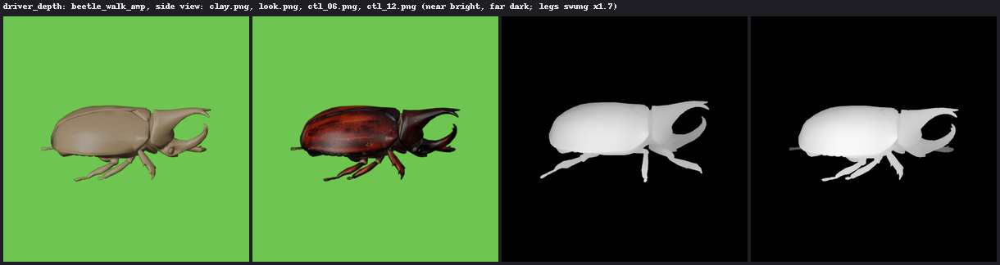
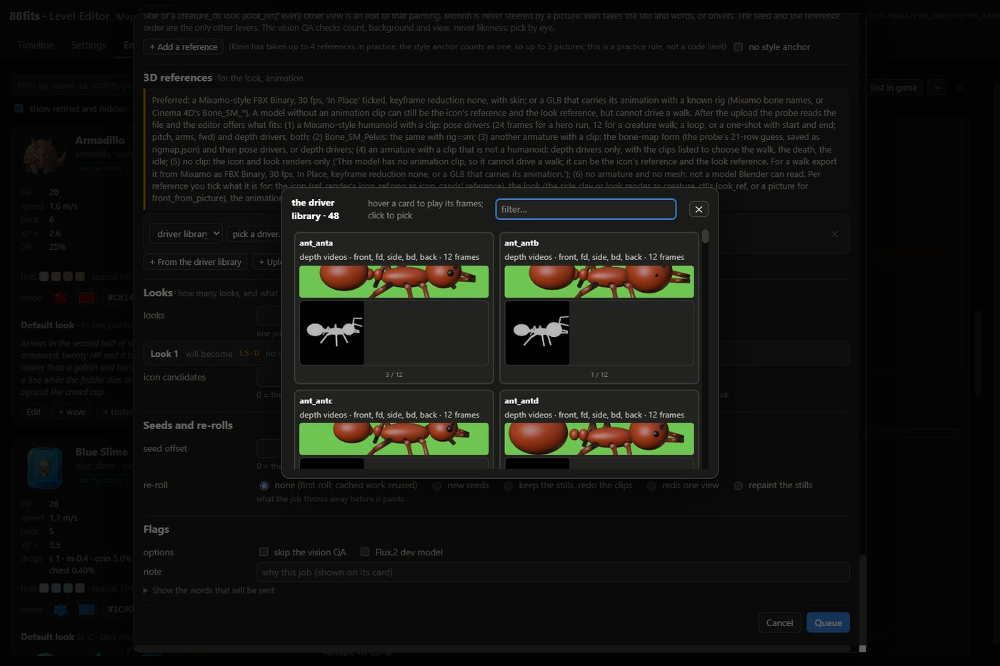
References and the words
The form lets you pick a role and a follow level per reference; these are the sentences it sends, the ones that worked in earlier passes. Nothing else changes how strongly a picture is followed.
| Role · level | Where it is used | The words |
|---|---|---|
| style · fixed | the style anchor, first reference of every front still; never for icons | "Using exactly the same art style, rendering, shading, palette and outline treatment as the reference image, draw a new subject: … Do not copy any subject from the reference." |
| identity · loosely | the model-walked creature's side candidates | "The nth reference image shows what this creature looks like: copy its armour, colours and markings, but not its pose or camera angle." |
| identity · closely | a front from a picture | "The nth reference image is the creature: redraw this exact creature as a finished 2D anime game creature illustration of … Keep …" |
| identity · copy exactly | icon candidates with a render; the title cut-out's figure | "Copy this exact object from the reference image: its silhouette, proportions, parts and colours, seen from the same angle." / "Keep the same face, outfit, colors and proportions as the reference." |
| pose and anatomy · closely | the clay render of a model | "The second reference image is a smooth plain 3D model of …: use it only for the anatomy, the pose, the camera angle and where every leg and every other part is. Redraw it as a finished, detailed anime game creature illustration …" |
| view · fixed | every other view of a creature or hero, from that view's own painting | "Turn this exact creature around and show a full-body back view seen directly from behind, no face visible. Keep the same colors, proportions and art style, standing." |
| held object · copy exactly | the title cut-out's second reference | "The second reference image shows the …: copy its shape and colours exactly … the … is the only thing he holds" |
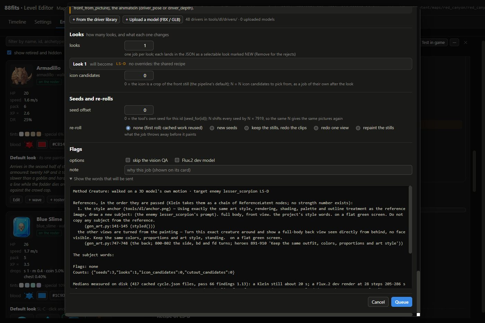
The stats
Art is one half of an asset; the form is the other. Every number has the template's value as its grey default, and the rules that would break the game's checks block Save with a red line that names them.
Enemies, elites and bosses
- Identity: name, flavour, archetype (only elite and boss change behaviour; the rest are labels), brain (chase, flock, kite, charge, kamikaze, artillery, caster, support, boss), the doc line the Collection reads.
- Body: HP, bite damage, knockback (above zero), speed, size in metres, radius, damage reduction, bite cooldown, blood colour, shadow, head height, which way the front and back face, the badge.
- Brain blocks: the blocks the brain naturally uses appear by themselves (ranged, charge, kamikaze, artillery, caster, support, ambush, death burst, boss, elite); "+ Add block" adds any other. A combination no creature in play uses says untested in play: allowed, but look at it in the arena.
- Attack script (bosses and elites): a card per attack with that attack's own keys, a telegraph picture drawn to scale, and the sequence line of wind-ups and gaps.
- Spawning: pack size, cap share, max alive, XP, can be an elite, can be grabbed, power-up drops. Drops: small, medium and large gems, gold, a chest, a specific power-up. Variance: tints, the special's chance and its colour, with the frame tinted live.
- Sounds: hit, die, attack and spawn, from the sound map's ids.
The Compare with panel at the top shows the template against this one: HP at 0:00, 5:00 and 12:00 after the map's multipliers, seconds to kill with a level-1 Revolver, bites to kill the hero, and the ring hint. These are the numbers that decide where in the run the creature belongs.
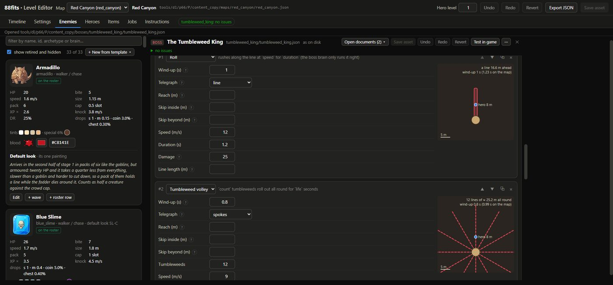
Heroes
- Trait: the stat that grows per level (one or two), with the sentence the game will show previewed under it and a "Set trait_text from the rule" button; the heal on level-up.
- Favourites: the favourite weapon or passive and its bonus (found at level N, or found full), the start weapon.
- Specials: cannot stop, momentum, auto magnet, motherlode.
- Availability: hidden, available or purchase with a price and a currency type. Purchase is written and shown but not wired yet: such a hero stays hidden in play.
- His own: his weapon, his hero mutation and his perks, each with an Edit that opens them on the Items tab.
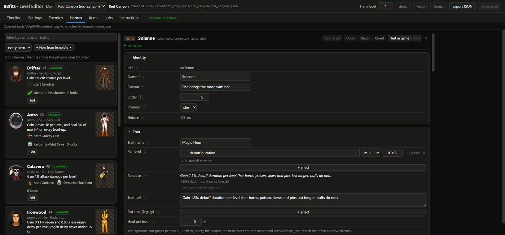
Items
- Weapons: behaviour (the thirteen the game has), targeting, the base stats with the game's defaults as placeholders, exactly five level steps as effect rows with the wording the card will show, the evolution and the path strip (element, volume, motion) with "Create templates" when a weapon has none, params as JSON with the behaviour's known keys as chips, sounds.
- Lines and passive items: the levels, the max level, line or item, what it evolves into, the card text.
- Mutations and evolutions: opened from their weapon's card, with their kind, text and effects.
- Availability: hidden, available, or locked by an unlock quest, written from the quest drawer (survive N minutes, kill N of a creature, open N chests…). The band gauge shows how many items are quest-locked; the ship's test wants a third to a half.
A new weapon starts hidden with three template mutations and a template evolution and can turn available once they are filled: the game offers mutations at fixed slots and needs a complete path.
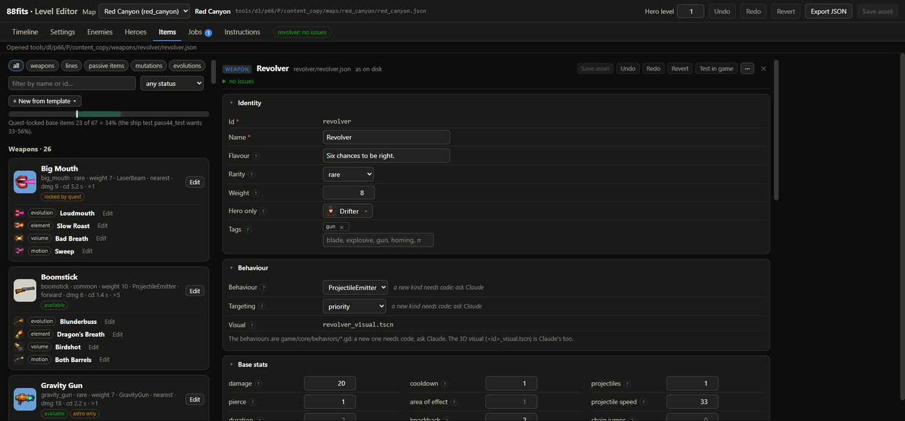
How it appears in the game
order, the hero sheet behind the name plaque, the arena's HERO tab. Hidden heroes stay out; a locked one shows its quest.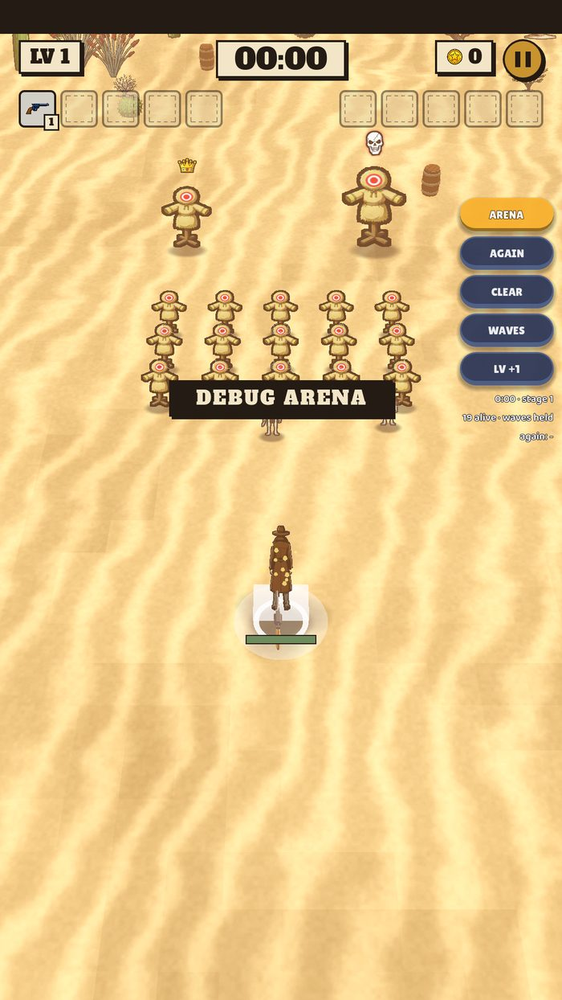
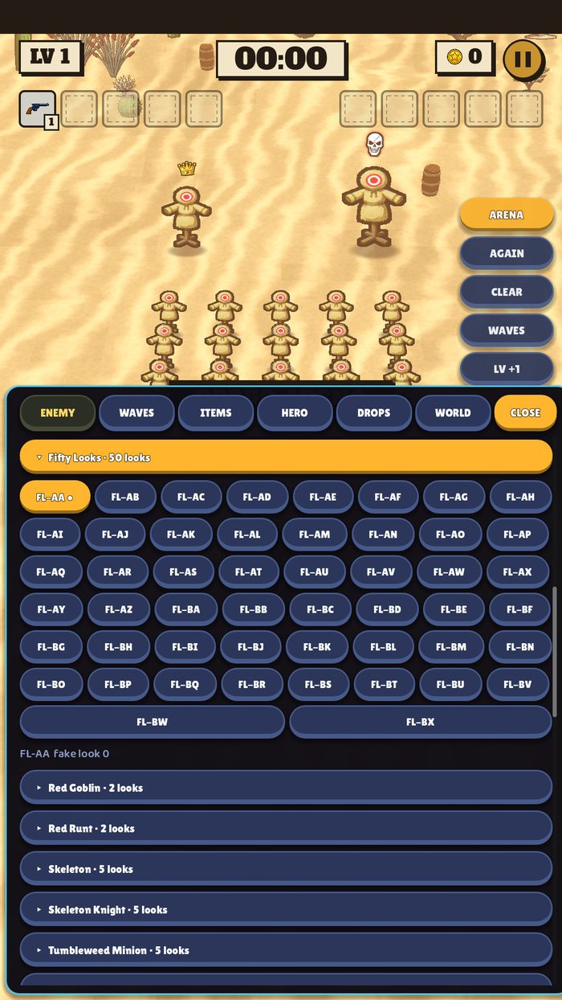
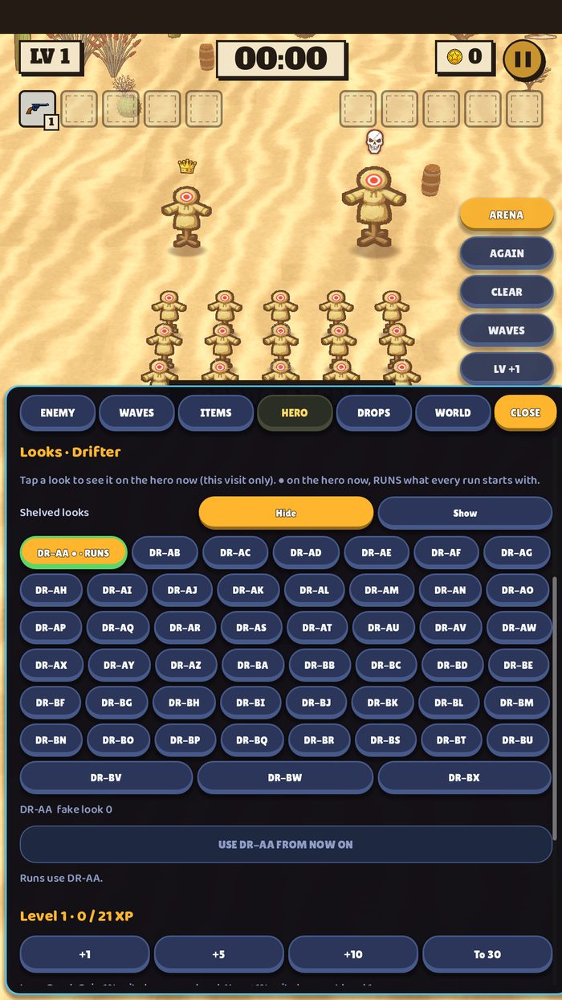
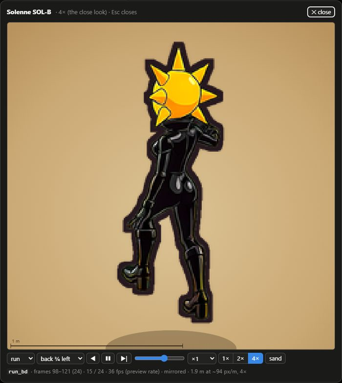
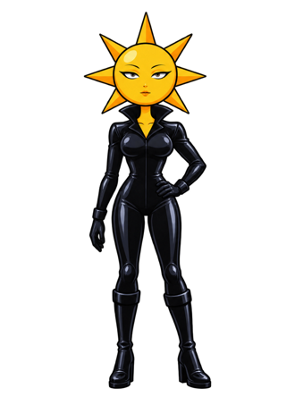
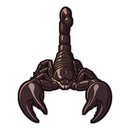
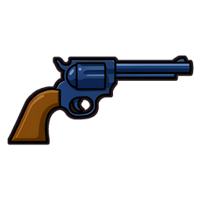
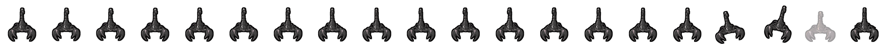
A look that just landed plays at once in the arena and can be named by a wave row; "fresh" is only the review mark. Shelving hides, it never deletes. Removing moves the files to the backups folder. Every Save and every landing keeps a backup of the JSON as it was.
When something looks wrong
- A still is off (a face on a back, four ears): open the job card, Re-roll…, tick that still, a new seed. Only that still is painted again; everything cached stays.
- A clip is off (a limb grows, the cadence halves): Re-roll with that clip ticked; its folder moves aside and the seed goes up. For a free clip try the stride method or a model if the shape allows.
- The job says "fell back" in its clip_kind: the driven walk failed quietly and a free clip took its place. Shrink the driver (pose_scale) or lower
clip_fill, then re-roll that clip. - The colour drifted on a view: repaint that view (the candidates path) and name the colour in
keep; remap only moves a hue, it does not restore a wrong one. - "not imported" on a look: the next finished job or Save imports; the chip turns green by itself.
- "unmerged" on a job: the JSON has a layout the one-line writer cannot keep; press Merge again after tidying, or Re-dump this file knowing every line may change in git.
- The server is busy: the Jobs tab's header says who holds the AI server and the Godot lock, and for how long. One ComfyUI job runs at a time, yours and Claude's alike. A lock left by a process that died is reclaimed by itself; one without an owner only by "Force release".
- The vision check is off (LM Studio closed): jobs run with "QA online: no" and keep the first render of every try. Nothing fails; you just look harder.